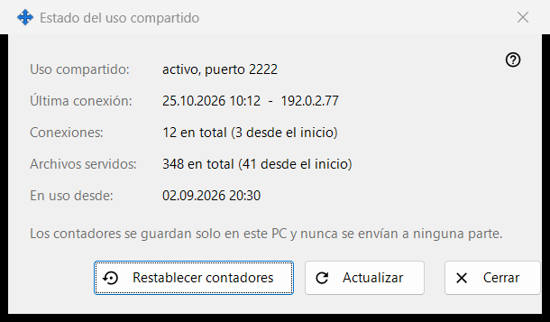
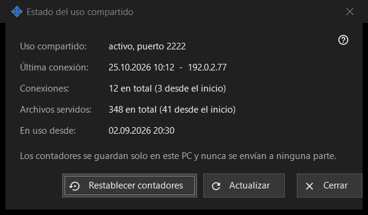

Estado del uso compartido
Para qué sirve
Muestra el estado actual del uso compartido y sus contadores sencillos. Se abre desde el enlace «Estadísticas» de la ventana principal.


En este orden
- Lee el estado en la parte superior.
- Comprueba la última conexión, el número de conexiones y los archivos servidos.
- Pulsa «Actualizar» para obtener valores nuevos.
- Pulsa «Restablecer contadores» para empezar de nuevo las cuentas.
- Pulsa «Cerrar».
Los elementos
Estado
«Uso compartido:» indica si el uso compartido está en marcha y en qué puerto, o que está apagado, o que el worker no está disponible. «En uso desde:» muestra cuándo se inició el uso compartido.
Contadores
«Última conexión:» muestra la hora del último teléfono, o «nunca». «Conexiones:» y «Archivos servidos:» muestran el total y, entre paréntesis, el número desde el último inicio. Los contadores se guardan solo en este PC y no se envían a ninguna parte.
Actualizar y restablecer
«Actualizar» vuelve a leer los valores del servidor. «Restablecer contadores» pregunta antes: los valores anteriores no se pueden recuperar. Si el restablecimiento falla, el botón muestra «No se pudo restablecer». «Cerrar» sale de la ventana.
Ajustes del gestor · Ajustes de uso compartido SFTP · Ajustes del servidor de intercambio